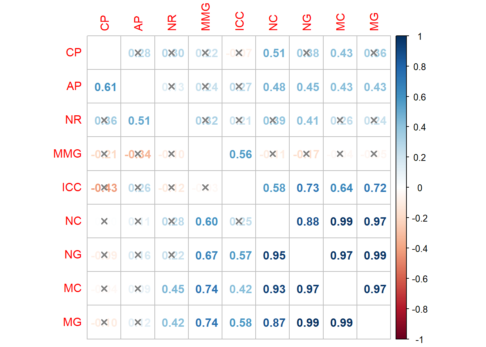
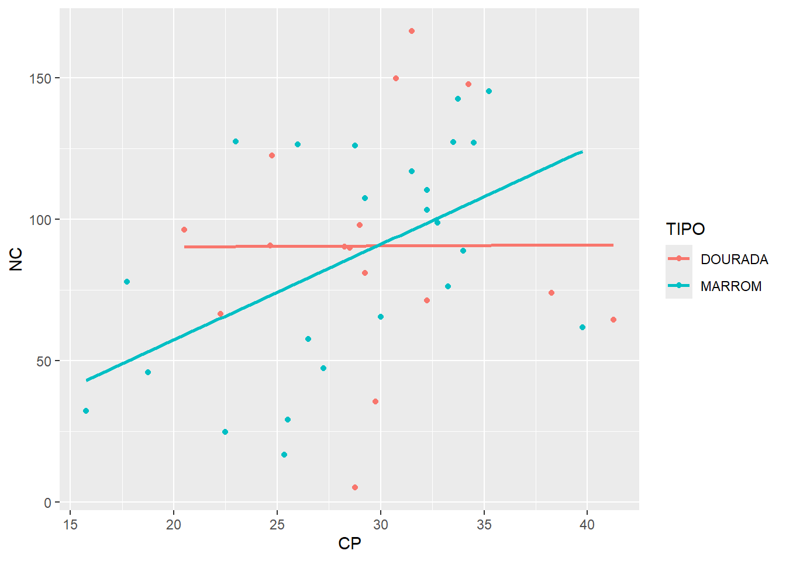
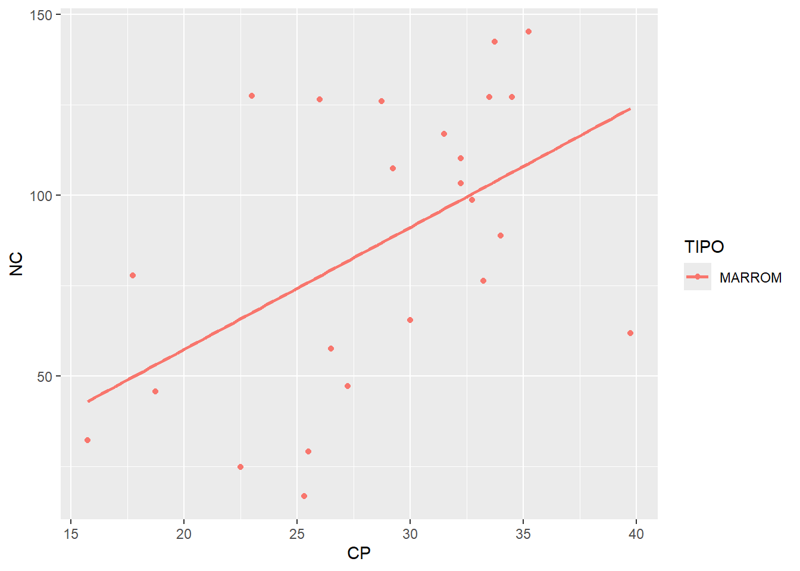
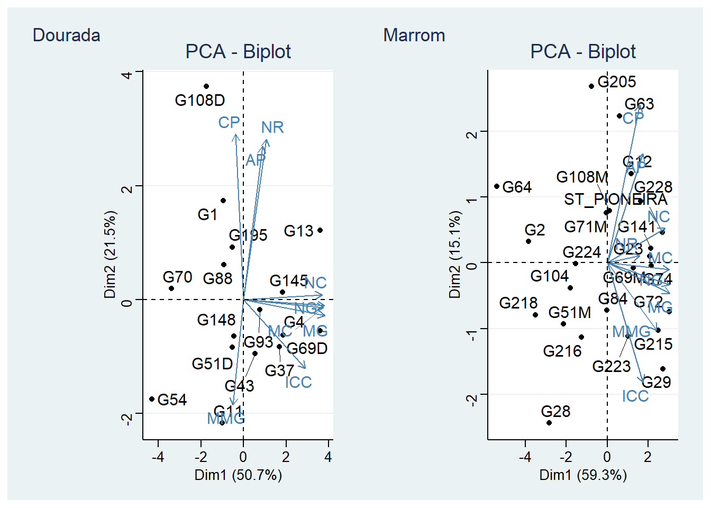

library(rio)
library(tidyverse)
library(factoextra)
library(FactoMineR)
library(metan)
library(corrplot)
library(ggthemes)
library(patchwork)
dfgens <-
import("data/dados_plantas.xlsx") |>
mutate(CP = AP - AC) |>
group_by(GEN) |>
summarise(across(AP:ICC, \(x){mean(x, na.rm = TRUE)})) |>
select(-AC)
tipos <- import("data/tipos.xlsx")
dfggplot <-
dfgens |>
left_join(tipos) 05: Análise de Correlação e PCA em Genótipos de Linhaça (Linum usitatissimum L.) Dourada e Marrom
1 Pacotes
2 Correlação
corrs <-
dfggplot |>
group_by(TIPO) |>
nest() |>
mutate(corr = map(data, function(x){
corr_coef(x)
}))
# numero de genótipos em cada
map(corrs$data[1:2], function(x){
summarise(x, n())
})|>
list_rbind() |>
mutate(tipo = c("dourada", "Marrom"))
## # A tibble: 2 × 2
## `n()` tipo
## <int> <chr>
## 1 16 dourada
## 2 24 Marrom
library(corrplot)
lower <- make_lower_tri(corrs$corr[[1]]$cor)
upper <- make_upper_tri(corrs$corr[[2]]$cor)
lower[is.na(lower)] <- upper[is.na(lower)]
diag(lower) <- 1
# PVAL
lowerpv <- make_lower_tri(corrs$corr[[1]]$pval)
upperpv <- make_upper_tri(corrs$corr[[2]]$pval)
lowerpv[is.na(lowerpv)] <- upperpv[is.na(lowerpv)]
diag(lowerpv) <- 1
# jpeg("figs/correlacao.jpg", width = 6, height = 6, units = "in", res = 600)
corrplot(lower,
method = "number",
p.mat = lowerpv,
order = "hclust",
insig = "pch",
pch.cex = 1,
pch.col = "gray50",
diag = FALSE)
3 Exploração
ggplot(dfggplot, aes(CP, NC)) +
geom_point(aes(color = TIPO)) +
geom_smooth(aes(color = TIPO), method = "lm",
se = FALSE)
dfm <-
dfggplot |>
filter(TIPO =="MARROM")
ggplot(dfm, aes(CP, NC)) +
geom_point(aes(color = TIPO)) +
geom_smooth(aes(color = TIPO), method = "lm",
se = FALSE)
4 PCA
dfpca <-
dfggplot |>
group_by(TIPO) |>
nest()
pcad <- PCA(dfpca$data[[1]] |> column_to_rownames("GEN"), graph = FALSE)
pcam <- PCA(dfpca$data[[2]] |> column_to_rownames("GEN"), graph = FALSE)
bip_d <- fviz_pca_biplot(pcad, repel = TRUE) + theme_stata()
bip_m <- fviz_pca_biplot(pcam, repel = TRUE) + theme_stata()
bip_d + bip_m +
plot_annotation(tag_levels = list(c("Dourada", "Marrom")))
# ggsave("figs/biplot_pca.jpg",
# width = 15,
# height = 6)5 Section info
sessionInfo()
## R version 4.4.2 (2024-10-31 ucrt)
## Platform: x86_64-w64-mingw32/x64
## Running under: Windows 11 x64 (build 26100)
##
## Matrix products: default
##
##
## locale:
## [1] LC_COLLATE=Portuguese_Brazil.utf8 LC_CTYPE=Portuguese_Brazil.utf8
## [3] LC_MONETARY=Portuguese_Brazil.utf8 LC_NUMERIC=C
## [5] LC_TIME=Portuguese_Brazil.utf8
##
## time zone: America/Sao_Paulo
## tzcode source: internal
##
## attached base packages:
## [1] stats graphics grDevices utils datasets methods base
##
## other attached packages:
## [1] patchwork_1.3.0 ggthemes_5.1.0 corrplot_0.95 metan_1.19.0
## [5] FactoMineR_2.11 factoextra_1.0.7 lubridate_1.9.4 forcats_1.0.0
## [9] stringr_1.5.1 dplyr_1.1.4 purrr_1.0.2 readr_2.1.5
## [13] tidyr_1.3.1 tibble_3.2.1 ggplot2_3.5.1 tidyverse_2.0.0
## [17] rio_1.2.3
##
## loaded via a namespace (and not attached):
## [1] Rdpack_2.6.2 sandwich_3.1-1 readxl_1.4.3
## [4] rlang_1.1.5 magrittr_2.0.3 multcomp_1.4-26
## [7] compiler_4.4.2 mgcv_1.9-1 vctrs_0.6.5
## [10] pkgconfig_2.0.3 fastmap_1.2.0 backports_1.5.0
## [13] labeling_0.4.3 utf8_1.2.4 rmarkdown_2.29
## [16] tzdb_0.5.0 nloptr_2.1.1 xfun_0.50
## [19] jsonlite_1.9.1 flashClust_1.01-2 tweenr_2.0.3
## [22] broom_1.0.7 cluster_2.1.6 R6_2.6.1
## [25] stringi_1.8.4 RColorBrewer_1.1-3 GGally_2.2.1
## [28] car_3.1-3 boot_1.3-31 cellranger_1.1.0
## [31] numDeriv_2016.8-1.1 estimability_1.5.1 Rcpp_1.0.14
## [34] knitr_1.49 zoo_1.8-12 R.utils_2.12.3
## [37] Matrix_1.7-1 splines_4.4.2 timechange_0.3.0
## [40] tidyselect_1.2.1 abind_1.4-8 rstudioapi_0.17.1
## [43] yaml_2.3.10 codetools_0.2-20 lattice_0.22-6
## [46] lmerTest_3.1-3 plyr_1.8.9 withr_3.0.2
## [49] coda_0.19-4.1 evaluate_1.0.3 survival_3.7-0
## [52] ggstats_0.8.0 polyclip_1.10-7 pillar_1.10.1
## [55] ggpubr_0.6.0 carData_3.0-5 DT_0.33
## [58] reformulas_0.4.0 generics_0.1.3 mathjaxr_1.6-0
## [61] hms_1.1.3 munsell_0.5.1 scales_1.3.0
## [64] minqa_1.2.8 xtable_1.8-4 leaps_3.2
## [67] glue_1.8.0 emmeans_1.10.6 scatterplot3d_0.3-44
## [70] tools_4.4.2 lme4_1.1-36 ggsignif_0.6.4
## [73] mvtnorm_1.3-3 grid_4.4.2 rbibutils_2.3
## [76] colorspace_2.1-1 nlme_3.1-166 ggforce_0.4.2
## [79] Formula_1.2-5 cli_3.6.4 gtable_0.3.6
## [82] R.methodsS3_1.8.2 rstatix_0.7.2 digest_0.6.37
## [85] ggrepel_0.9.6 TH.data_1.1-3 htmlwidgets_1.6.4
## [88] farver_2.1.2 htmltools_0.5.8.1 R.oo_1.27.0
## [91] lifecycle_1.0.4 multcompView_0.1-10 MASS_7.3-61